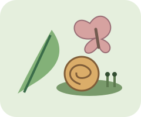

先觀察，再下結論
小動物與生物探索館
觀察蝸牛、蜘蛛、蝙蝠與池塘鄰居。
不搶時間，想通比猜中更有趣。

今天想探索哪個主題？
先選答案，再按「確認答案」；還沒想通也能先看解析。可重試，但會保留第一次作答結果。
原創觀察情境搭配OpenStax、CDC與Animal Diversity Web資料，不是現場物種鑑定或飼養教學。插圖為示意，不按精確比例。沒有倒數、帳號或排行榜；作答只留在本分頁，重新整理即清空，不儲存、不上傳。
挑戰完成
把觀察的線索帶走。
首次結果與重試結果分開記錄；答對題數不等於已具備物種鑑定能力。展開每題，看看資料支持到哪裡。